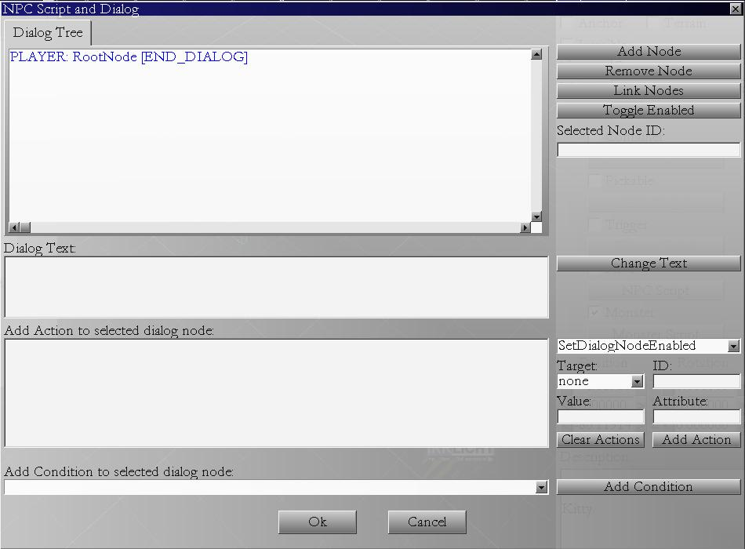

In this tutorial we will talk about NPC conversation. In many games you have an option to
speak with other characters. It usually looks like several options player can chose to say,
and NPC will respond to each accordingly.
To make things interesting, this tutorial is moved to one such dialog. If you start game example 04,
you can click on the beast model to talk to it. The beast will explain everything you want to know
about dialogs. You can then return here to try to make your own dialog.
To make your own dialogs on your maps start Level Editor.
You should be comfortable with laying objects around by now, so layout a simple map.
Add one cat model from the Monsters tab (Animals group) and set it to be NPC in the properties panel.
Click "NPC Script" button.

Note: This is big dialog, lots of options, complicated subject, might need more time for this tutorial.
In this window, you can write dialog nodes and add dialog actions.
When you create new dialog, there is only one node existing - RootNode. It should not be deleted or changed in any way.
It is the parent of all nodes.
Select the RootNode and click Add Node button. New dialog pops up where you can enter text: "hi roger".
This is what NPC says first when you click on it.
NPC can have many entry lines, but only one should be enabled at the time - one that he says when you click on it in the game.
Other lines can be enabled later, if you want him to say something else when you click on it ("Got my mouse already?").
Select "hi roger" node. Add several nodes of player text:
- "Hello there can I ask you something?
- "Give me all you got!"
- "Nothing, good bye."
These will be players first dialog options. Next we add what NPC says to that. Select first player
option and add node after it, NPC could say: "Shoot."
On the second line ("Give me all you got") NPC could respond: "Here you are, all I have is this mushroom".
Leave third player option ("Nothing, good bye.") as is, this will automaticaly cause end of the dialog.
Dialog branch should not end with NPC node cause it will not be displayed.
You can remove nodes using button "Remove Dialog Node".
You can enable/disable nodes (if node is disabled it will disable all the children nodes as well).
You can link nodes so you conversation can return to the begining wihout exiting.
To link two nodes, you first select one node, then click the button, then select the second node.
You always link Players node to NPC node, so when user clicks on that players text, NPC reply follows.
If you disable dialog node, it will not appear in conversation. To make node appear in game, you use
action "SetDialogNodeEnabled". You can put this action in pickable and trigger items, or in the dialog
itself. For example, player could say: "Do you have anything beside the bloody mushroom?" But this node
should appear only after NPC said: "Here you are, all I have is this mushroom".
To add actions to dialog nodes, you first select the node you want action to be attached to.
Then you select action from drop down combo box, for example "SetDialogNodeEnabled" action. This
action needs target value set to id of the dialog node you want to enable/disable (select id from
drop down box, and type id number in edit box). Value field should contain text "true" or "false".
Attribute field must contain the name of the dialog file (in the case of beast beast_01.dlg).
Thats right, you can enable/disable dialog nodes of other NPC dialogs, thus easilly making posible
NPC saying things like "I heard you spoke with Bidalf already... I have better proposal for you."
Finally click "Add Action" button and action text should appear in the box on the left.
You can add more actions to one dialog node.
To make NPC and PC exchange items, you use action "GiveItemToPC", you can use this action to give
mushroom item to player once NPc says she is giving it. Value field contains the name of the item.
The item should first be added to NPC inventory, but that is in another tutorial...
Conditions will be addressed later.
Click ok on the dialog window to save your dialog and then save your map.
Edit game_config.xml to point to your map.
Start game example.
You should see your map loaded.
Walk to the cat and click on it.
Your dialog should popup. Try out the actions you added.
Warning: Dialogs and actions should be added only after map is fully finished. If you change the map
later (delete models, add new ones, etc) actions might end up pointing to wrong objects and things
might not work as they should, so keep that in mind when you create your game.
Petar Bajic
MPE (C) All Rights Reserved
Homepage: www.mystic-peanut.com
July, 21 2009.
Index